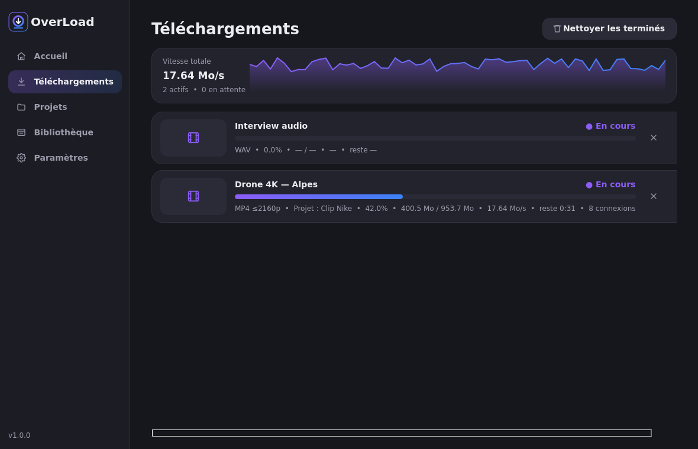
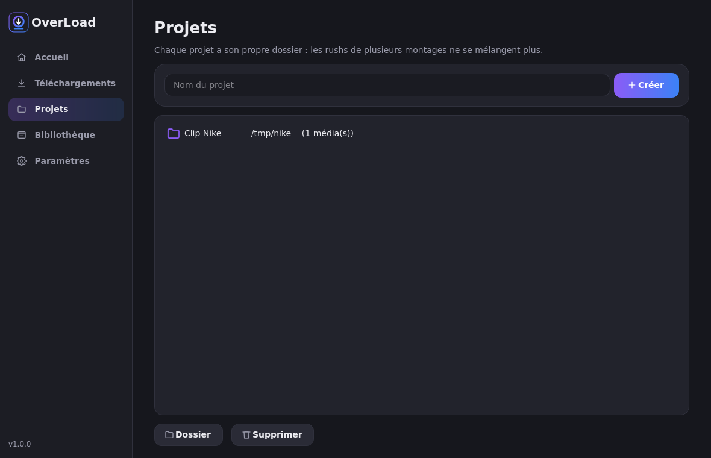
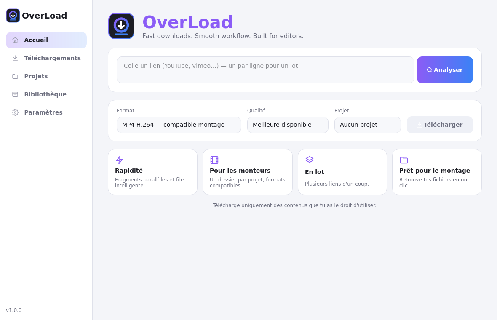
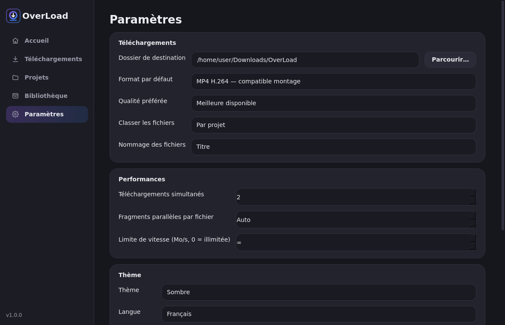

Rapidité
Connexions parallèles adaptées à chaque fichier, téléchargements simultanés et vitesse réelle en Mo/s.
Pour les monteurs
Un dossier par projet, MP4 H.264 compatible avec Premiere et DaVinci, WAV sans perte.
En lot
Colle dix liens d'un coup : ils partent tous dans la file d'attente, sans doublon.
Prêt pour le montage
Bibliothèque consultable par recherche, avec résolution, images/s et codecs. Le fichier s'ouvre en un clic.
Une file d'attente qui travaille pour toi
Annuler, réessayer, reprendre après une coupure ou une fermeture de l'app : chaque fichier est ensuite vérifié et reçoit son empreinte SHA-256.


Et la vitesse, honnêtement ?
OverLoad exploite au mieux ta connexion, mais aucune application ne peut garantir une vitesse supérieure partout : le serveur et les limites de la source comptent aussi. Nous publions uniquement des mesures réelles, reproductibles avec scripts/benchmark.py.

